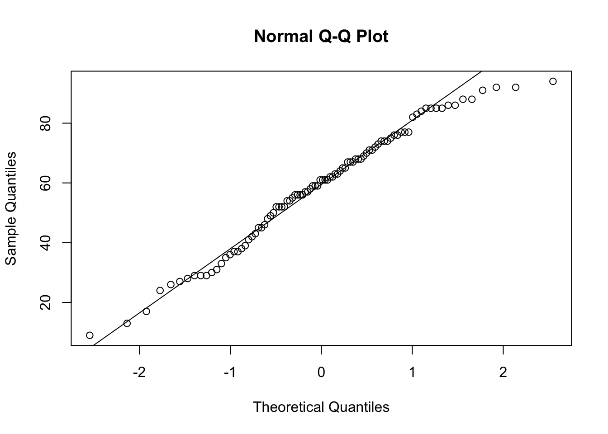

Questions 1-4: Full credit for meaningful solutions.
Questions 5-9: 2 points for each component
Identifies the appropriate test (one-sample, two-sample, or paired t-test). For two-sample t-tests, both the equal variance and unequal variance assumptions will suffice (no cases where the variances are not equal).
Identifies the correct hypotheses. (Improvement = Smaller TFI)
Correctly creates a visualization. For 5, 8, and 9, one visualization to check the normality of the responses or differences in responses. For 6 and 7, two visualizations are required to check the normality for each group.
Correctly uses the t.test function with the appropriate subset of data.
Writes a correct conclusion based on the results of t.test. Statement of rejecting or failing to reject the null hypothesis using the context of the alternative hypothesis.
Question 10: 2 points for describing what each numeric value represents: t-statistic, degrees of freedom, p-value, confidence interval, and estimate of the mean.
From Reading
Answers will vary. The goal is to compare the effectiveness of guided internet-based cognitive behavioral therapy (iCBT) with face-to-face (F2F) clinical care for managing tinnitus.
Answers will vary. The primary gap in literature is that there is no comparison of iCBT intervention compared to the F2F care.
Answers will vary. Participants meet the eligibility criteria (age, location, internet access, etc.). Participants are randomly assigned into either intervention group, iCBT or F2F (control) in a 1:1 allocation.
Answers will vary. Multiple barriers exist, no masking of treatments is possible, lack of standardization of care. Limitations are important to discuss because it is not feasible to design a study that considers every possible aspect.
Question 5
One-sample t-test
\(H_0: \mu_{all}=50\) vs \(H_A:\mu_{all}>50\)
Q-Q plot shows most points following the line. Can assume normality.
See below
We have evidence to conclude that the true mean baseline TFI is greater than 50.
data <-read.csv('responses-tfi.csv')qqnorm(data$T0); qqline(data$T0)

t.test(data$T0, mu =50, alternative ='greater')
One Sample t-test
data: data$T0
t = 4.1859, df = 91, p-value = 3.272e-05
alternative hypothesis: true mean is greater than 50
95 percent confidence interval:
55.27635 Inf
sample estimates:
mean of x
58.75
Question 6
Two-sample t-test (equal variance or unequal variance forms are okay)
\(H_0: \mu_{iCBT, T0}=\mu_{F2F, T0}\) vs \(H_A: \mu_{iCBT, T0}\neq\mu_{F2F, T0}\)
Baseline for the iCBT group looks normally distributed. Some smaller outliers exist for the F2F group, but nothing too concerning.
See below
We do not have evidence to conclude that the true difference in baseline TFI scores between the iCBT and F2F groups is different than zero.
Welch Two Sample t-test
data: t0.icbt and t0.f2f
t = -0.55427, df = 86.496, p-value = 0.5808
alternative hypothesis: true difference in means is not equal to 0
95 percent confidence interval:
-10.668095 6.015921
sample estimates:
mean of x mean of y
57.58696 59.91304
Question 7
Two-sample t-test (equal variance or unequal variance forms are okay)
\(H_0: \mu_{iCBT, T1}=\mu_{F2F, T1}\) vs \(H_A: \mu_{iCBT, T1}\lt\mu_{F2F, T1}\)
Normality appears to be present in both groups at T1.
See below.
There is not evidence to conclude that the mean TFI is better for iCBT than for F2F.
Welch Two Sample t-test
data: t1.icbt and t1.f2f
t = -0.75996, df = 88.894, p-value = 0.2246
alternative hypothesis: true difference in means is less than 0
95 percent confidence interval:
-Inf 3.690628
sample estimates:
mean of x mean of y
35.13043 38.23913
Question 8
Paired t-test
\(H_0: \mu_{iCBT, T2}-\mu_{iCBT, T1}=0\) vs \(H_A: \mu_{iCBT, T2}-\mu_{iCBT, T1}\lt0\)
The differences appear to be normally distributed.
See below.
There is evidence to suggest that the mean TFI improved between T1 and T2 for the iCBT group.
t.test(icbt$T2, icbt$T1, alternative ='less', paired = T)
Paired t-test
data: icbt$T2 and icbt$T1
t = -2.4064, df = 36, p-value = 0.01068
alternative hypothesis: true mean difference is less than 0
95 percent confidence interval:
-Inf -1.822818
sample estimates:
mean difference
-6.108108
Question 9
Paired t-test
\(H_0: \mu_{iCBT, T0}-\mu_{iCBT,T2}=13\) vs \(H_A: \mu_{iCBT, T0}-\mu_{iCBT, T2}\gt13\)
The differences appear to be normally distributed.
See below.
There is evidence to conclude that the mean TFI improved by 13 points for T2 compared to T0.
Paired t-test
data: icbt$T0 and icbt$T2
t = 3.9831, df = 36, p-value = 0.0001584
alternative hypothesis: true mean difference is greater than 13
95 percent confidence interval:
20.64541 Inf
sample estimates:
mean difference
26.27027
Question 10
t = 3.9831 is the test statistic, obtained from \(\frac{\bar{X}-\mu}{s/\sqrt{n}}\).
df = 36 is the degrees of freedom, obtained by 37 - 1 (only 37 complete observations)
p-value = 0.0001584 is the probability of observing values of \(\bar{X}_{iCBT, T0}-\bar{X}_{iCBT, T2}\) that are as or more extreme than our observed statistic assuming \(H_0\) is true. Obtained with the pt() function.
(okay if not present in solution) alternative hypothesis: true mean difference is greater than 13: statement of the alternative hypothesis.
95 percent confidence interval: (20.64541, Inf) is the one-sided confidence interval for \(\mu\).
mean difference: 26.27027 is the observed difference in means.
Extra Credit
Each hypothesis test has a probability of making a Type I error (with probability \(\alpha\)). Performing multiple tests increases the probability of making at least one Type I error across the collection of tests. This is known as multiplicity, which affects the collective error rate across all of the tests.